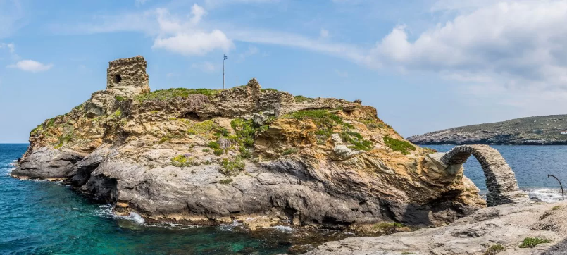
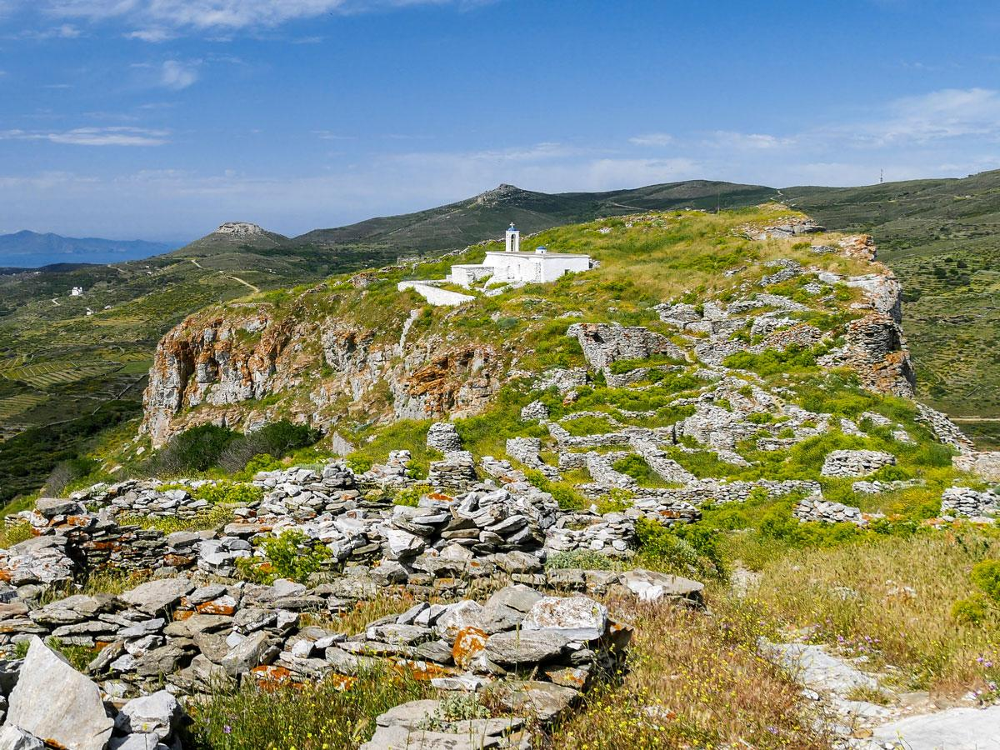

Where does the name 'Andros' come from?
Andros has had ancient names such as Hydroussa (with abundant waters), Epagrís, Nonagría (wet field), Lasia (with rich vegetation), and Gavros. The prevailing version regarding the island’s name originates from mythology.
Mythology of Andros
"Long before 3000 BC, a divine union took place—between Apollo, god of light and prophecy, and Roio, daughter of Staphylos and granddaughter of Dionysus. From that sacred bond, a child was born: Anios.
Blessed by his father, Anios rose to become the king of Delos, an island bathed in sunlight and myth. He would go on to have three daughters and two sons—Andros and Mykonos. The two boys each carved out their own legacy, ruling over the islands that would come to bear their names.
To this day, their mythical bloodlines linger. The people of the islands, shaped by this heritage, honored Dionysus above all, and carved the faces of their god-ancestors into their coins."

Andros throught the historical periods
Prehistoric and Archaic Period
The history of Andros during the prehistoric and archaic period states that its first inhabitants were the Pelasgians. They were followed by the Carians, then the Phoenicians, the Cretans, and finally the Ionians. During the Bronze Age, settlements such as Mikrogyali, Plaka, and Strofila flourished, with Strofila considered the largest surviving Neolithic settlement in the Aegean. The settlements of Zagora and Ipsili also reached great prosperity between 900-700 BC, as evidenced by the traces of the settlement discovered in Zagora (near Zaganiari). The prevailing theory suggests that the island’s first settler was Andros.
Classical Period
During the Classical period, Andros had its capital in Paleopolis. The prosperity of this period is evident from its rich coinage and the impressive statue Hermes of Andros (a Hellenistic-era replica housed in the Archaeological Museum in Chora). In the 7th century BC, the Andriots, along with the Chalkidians, founded four cities-colonies in Chalkidiki: Akanthos, Argilos, Sani, and the renowned Stageira, birthplace of the philosopher Aristotle. One of the best-preserved monuments of the Hellenistic period is the Tower of Agios Petros, built in a cylindrical shape. Dionysus was the primary deity worshipped by the inhabitants.
Andros During the Athenian Hegemony and the Peloponnesian War
With the onset of the Peloponnesian War, Andros fought alongside the Athenians. However, after the defeat in Sicily in 412 BC, the island revolted. After numerous battles, the final outcome was the establishment of an oligarchic government, and Andros fought alongside the Spartans.
Strofila
Strofilas in Andros is the most ancient city in Europe and dates back to 4,500 – 3,300 BC. It is the largest settlement of the Modern Neolithic Age that has been found in the Aegean. Stropilas was found almost intact in excavations redefining the data of the Cycladic prehistory.
Strofilas in Andros, the oldest city in EuropeObviously, the position of Andros was a natural bridge between the islands of the Aegean Sea and mainland Greece. It seems that the island’s characteristics such as vegetation, waters and fertile land have favoured the population and housing development of the site. Strofilas reveals a social structure and organisation at an early age because the existence of the city presupposes a collective effort. It also puts our knowledge on new bases for the form and structure of settlements, the art and metallurgy of the Neolithic, Early Cycladic and Middle Cycladic era.

Strofila, the largest preserved settlement of the Neolithic Era in the Aegean.
Andros During the Roman Era
During the Roman era, the people of Andros saw little change with the arrival of the Romans. They maintained their traditions, customs, and way of life. The primary differences were in language and governance, but over time, these distinctions faded as the Romans assimilated into Greek culture. The worship of Isis became prominent during the Roman period, as evidenced by an inscription that was embedded in a house in Paleopolis until 1987, now housed in the Paleopolis Museum.
Byzantine Period
During the Byzantine era, Andros developed its silk industry during the Komnenian dynasty (12th century). This turned the island into a hub for exporting silk and fine fabrics to the West. During this time, Paleopolis declined, and its residents turned to agriculture in the island’s interior. Christianity spread across Andros, and as Constantinople became the greatest commercial and economic center, Andros declined.

Kato Kastro - Venetian Rule

Epano Kastro - Andros Fortress
Venetian Rule
With the fall of Constantinople to the Franks, the island came under Venetian rule. In 1207, it was granted to Marino Dandolo, a relative of the Doge of Venice, and remained under their control until 1566. To protect the island from pirates, Dandolo built towers and castles, including the Kato Kastro (Castel a basso) in today’s Chora. The name Riva survives from that period, referring to the main dock of Chora. The second medieval fortification was the Epano Kastro (Castel del alto), considered larger and stronger. Smaller castles and fortifications were scattered across the island, including the Makrotantalo Tower, Vryokastro in Varidi, and Kastellaki in Gides. During Venetian rule, Albanian settlers moved to Andros, primarily in the northern part. A Venetian map from 1470 states that Andros was inhabited by 2,000 people.
Ottoman Rule
In 1566, Andros fell into Ottoman hands. During Ottoman rule, the island enjoyed a privileged status, which ensured relative economic prosperity. At the same time, there was a rapid development of maritime trade. In the 1770s, Andros came under Russian control. In 1790, Lambros Katsonis fought the Turkish fleet in the Battle of Andros but was defeated, losing most of his ships. The island’s economy remained agricultural. The kotsampasis of Epano Kastro (Korthi) were wealthy landowners, while in Kato Kastro, a new class of seafarers, the gemitzi, began to emerge. By 1813, Andros had 40 ships and about 400 sailors.
Andros from the Greek Revolution and Beyond
On May 10, 1821, Theophilos Kairis, a pioneer of the Greek Enlightenment, raised the banner of the Revolution,
marking the beginning of modern history. Thanks to its powerful shipping industry and the foresight of shipowners who invested
early in steam navigation, Andros experienced significant economic prosperity. Notably, Dimitris Moraitis from Andros
inaugurated the Greece–North America shipping route in the early 20th century. By 1939, Andros ranked second after
Piraeus in ship registrations. However, the island suffered losses in both World Wars, including significant casualties and
shipwrecks. Chora was bombed multiple times in 1944.

Theophilos Kairis, one of the pioneers of the Modern Greek Enlightenment
*New Information*
The Cyclades Olive Museum
The Cyclades Olive Museum is a private museum located in the mountainous village of Ano Pitrofos, very close to Menites. This museum is housed in a traditional building that was bought and restored by civil engineer Dimitris Chelmis, originating from Pitrofos and personal guide to the museum. The old oil mill that houses the museum is part of a two-floor building and occupies a large part of the ground floor (called katogi). The upper floor used to host the home of the owner. This fine example of animal-powered olive oil producing mill was very frequently met in the countryside of Andros island, operating until the 1960s.
The building of the Cyclades Olive Museum dates from earlier than 1857 and was probably operating during the 18th century. Its architectural elements, like arches and domes, are common in rural architecture of Andros and generally in the Cyclades islands. Until 1967 the oil mill stopped operating and until 1997 it was used as a storehouse. That year, the entire building (oil mill and house) was bought by its present owner, Dimitris Chelmis, and it was later restored and transformed into a museum. Visitors can get a view of the traditional oil production method in Andros and learn a lot about the local culture.

Let's see what you've learned about the History of Andros!